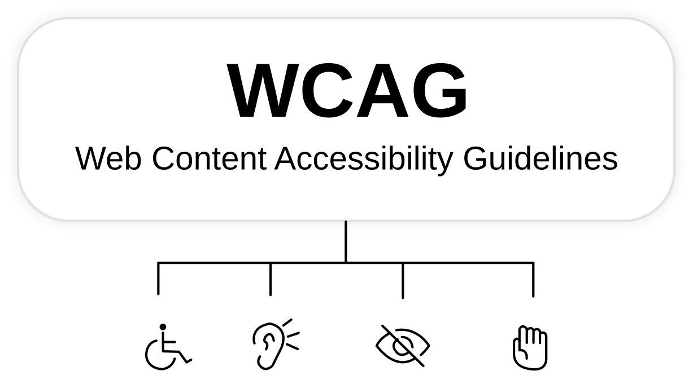

Amrock, LLC · UX Designer · 2022
Clear Sign Accessibility Audit: Championing WCAG 2.1 AA From Compliance Triage to Cultural Adoption
01 · Overview
The Business Problem
Between a compliance need and a genuine desire to improve the user experience, we did a deep dive into what it would take to bring Clear Sign's accessibility standards up to WCAG 2.1 AA. Amrock's eClosing platform processes thousands of real estate transactions annually across a dual user base of consumers and notaries. The product had accumulated significant accessibility debt. These were barriers that weren't just inconvenient but legally and ethically untenable for a platform handling one of the most high-stakes transactions in a person's financial life.
The goal was to move beyond compliance-as-checkbox: establish accessibility as a first-class design practice, embedded in process and not bolted on after the fact.

02 · Context & Constraints
The Real-World Mess
Retrofitting accessibility onto a live product is materially harder than building it in from day one.
Accumulated accessibility debt
Years of feature development without accessibility requirements meant issues existed at every layer, from color contrast and focus management to screen reader semantics and keyboard navigation.
Dual user base complexity
Clear Sign served both consumers signing mortgages and notaries facilitating closings. Accessibility needs and usage contexts differed meaningfully between these two populations.
Resource and timeline tension
Engineering capacity was committed across four concurrent agile teams. Any roadmap had to be ruthlessly prioritized, phased for feasibility without deprioritizing high-severity items indefinitely.
Cultural change required
The real challenge was shifting the organization's relationship to accessibility, moving from reactive compliance to proactive, systemic practice. This required evangelism as much as auditing.
03 · Methodology
The Framework
The audit was structured as a phased discovery and remediation process, using an expanded user journey as the primary scaffolding to locate where accessibility failures occurred relative to task completion.
Each identified issue was scored using a Severity × User Impact matrix, intersecting how critical the failed interaction was to task completion against the breadth of users affected. This produced a three-phase roadmap: critical blockers, sprint-level systemic improvements, and long-term design system integration.
Accessibility Severity Framework: Issue Criticality × User Population Affected
| Criticality → | Narrow Audience | Broad Audience | All Users |
|---|---|---|---|
| Blocker | ⬆ Fix immediately | ⬆ Fix immediately | ⬆ Fix immediately |
| Degraded UX | Backlog | Next sprint | ⬆ Fix immediately |
| Enhancement | Deprioritize | Backlog | Next sprint |
04 · Outcomes
Engineering Collaboration & Cultural Shift
Accessibility work lives or dies in the handoff. Remediation guidance was documented at the component level, not just flagged as issues, giving engineering teams actionable, testable specifications rather than abstract problem statements.
Roadmap Delivery
Delivered a phased accessibility roadmap across three horizons (immediate blockers, sprint-level systemic improvements, and long-term design system integration), co-developed with product team members.
Design System Integration
Advocated for accessibility requirements encoded directly into the new design system components, ensuring future features inherited compliance rather than requiring post-hoc auditing.
Cross-Team Coordination
Managed accessibility deliverables and timelines across four concurrent agile development teams, each at different stages of product maturity and implementation readiness.
Cultural Evangelism
Championed inclusive design practices beyond the audit, defining standards, running education sessions, and establishing accessibility as a shared team responsibility, not a UX afterthought.